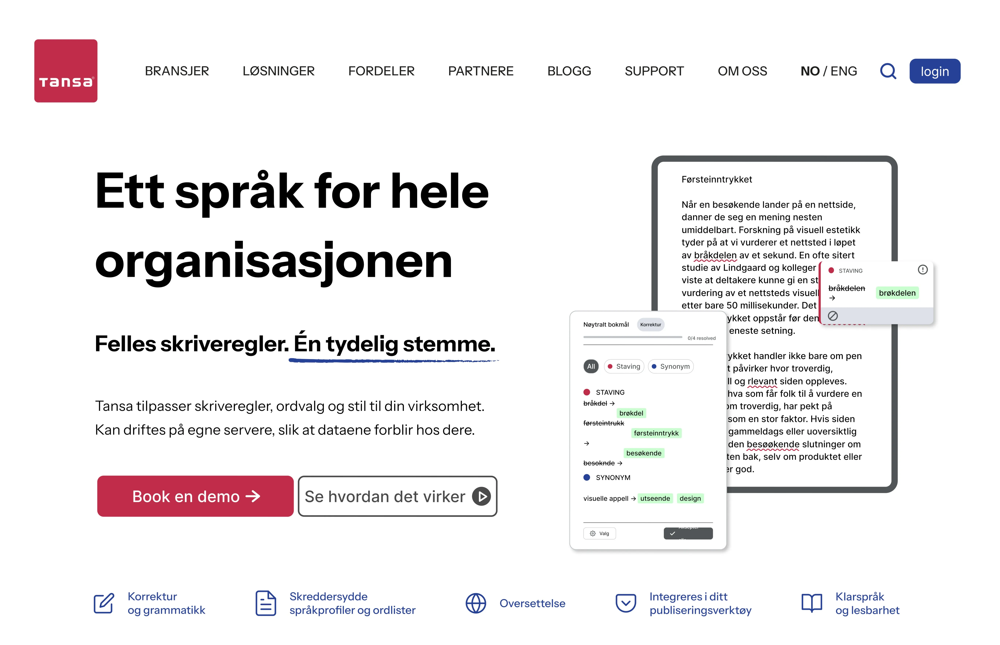
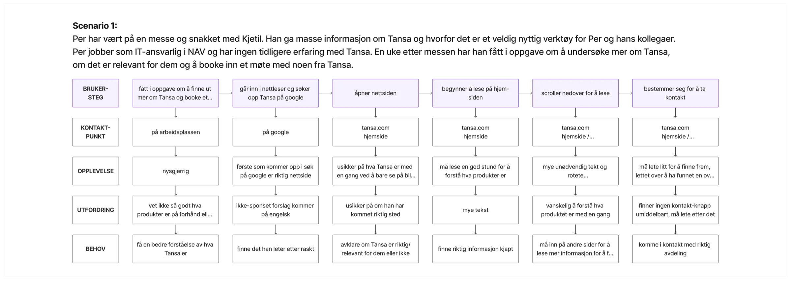
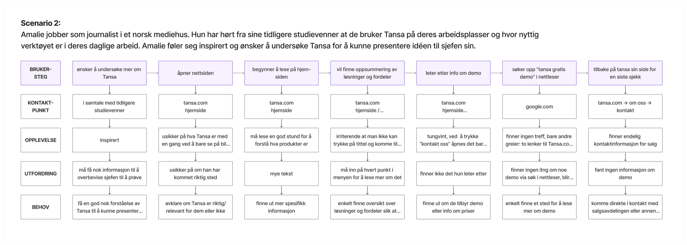
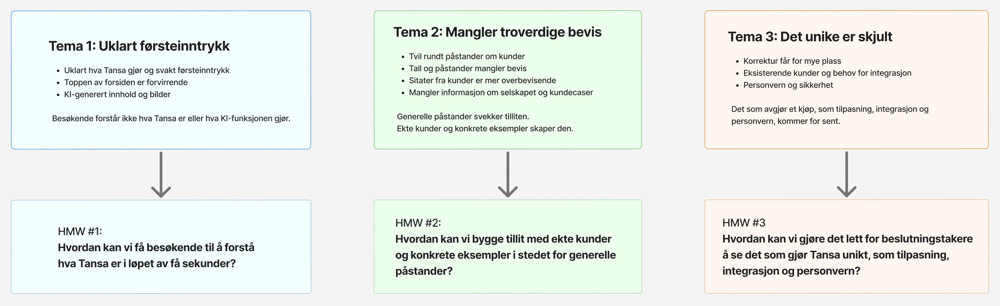
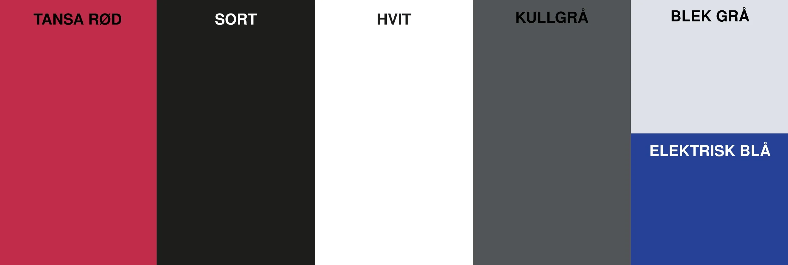
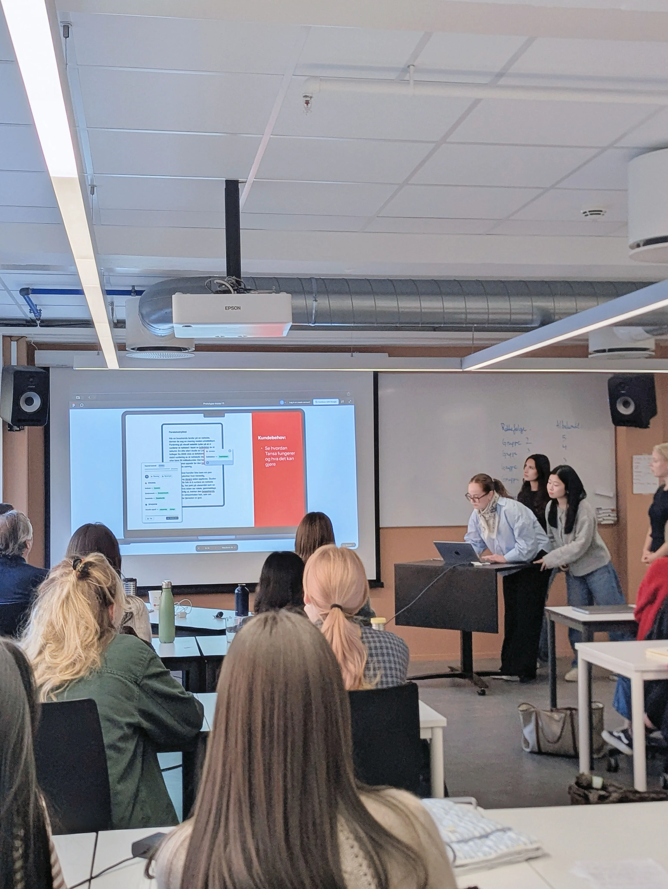
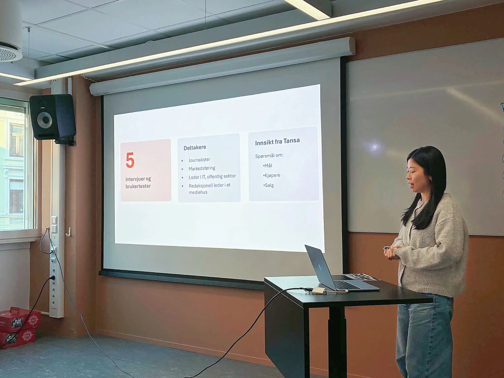
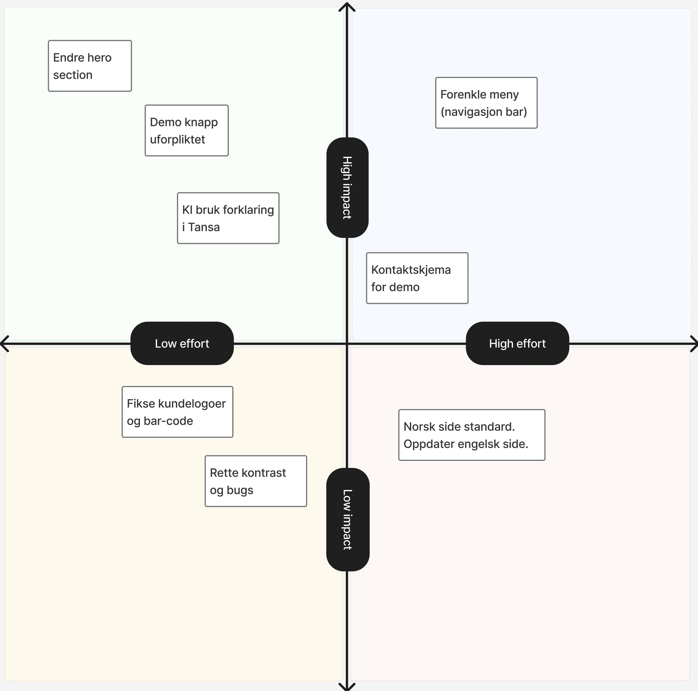

Reach new markets
Beyond the media industry
Lin Wei Lam
Group project · Fagskolen Kristiania · Autumn 2026
A clearer first impression for a strong product

Tansa is a Norwegian company that makes tailored language tools for newsrooms and organisations in Norway and abroad. The system analyses words in context and adapts to each customer's language, rules and tone.
Tansa wanted more customers. To understand what that meant for the website, I asked about their goals, buyers and sales. This gave us three goals to design for:
Reach new markets
Beyond the media industry
Clearer messaging
For the right audiences
More demos
Through the website
From Tansa, we learnt that it is often managers who look for tools like this. We therefore designed for managers responsible for text and language in organisations that produce a lot of content. End users still influence the decision, so we included them in the interviews too.
Here I show the key steps. All the material is collected in FigJam.
Tansa has more than 30 years of experience and customers all over the world. Even so, no one on our team had heard of the company before. When we explored the website, we felt it didn't show how strong the product is. The Norwegian and English versions were also very different. This gave us our hypothesis:
Hypothesis
The product is stronger than the website shows today, and it isn't clear what the product actually is.

We also looked at whether visitors could find their way around the website. We mapped the current menu structure and tested it with a Treejack test in Optimal Workshop. Most participants chose the wrong answer in almost every task, because the categories weren't organised around users' needs.
In a card sort with sticky notes, we grouped the content into new categories. The menu was outside what we had time to redesign, but the findings became the basis for our recommendation of a simpler menu under Next steps.

To get comparable data, I wrote an interview guide and a consent form for all participants. I combined the interviews with think-aloud user tests. The participants were journalists, marketers, public sector managers and an existing customer at a media company. Everything was recorded and transcribed in Teams.
The interview guide was built around three questions:
After the interviews, I coded the transcripts using a priori coding, based on the hypothesis and new themes that emerged.

I then grouped the statements into themes through affinity mapping.
Based on the findings, we also created two user journeys. One follows an IT manager in the public sector who needs to research Tansa and book a meeting. The other follows a journalist who wants to pitch Tansa to her manager. Both show where visitors got stuck, and what they needed to move forward.

(opens the full-size image)
(opens the full-size image)The analysis revealed three recurring themes. All three made it harder for Tansa to reach its goal: getting more people to book a demo.
Theme 1
None of the participants understood what Tansa does from the homepage alone. One would not have scrolled further if it hadn't been a test. Visitors who don't understand the product within seconds leave.
"I didn't get a sense straight away of what Tansa does."
Theme 2
Tansa has major customers, but the website didn't show why they chose Tansa. Generic claims weakened trust. Without trust, no one gets in touch about a major investment.
Theme 3
Proofreading got the most space, while customisation, integration and privacy came too late. That makes Tansa look like an expensive spell-checker.
"I don't think thousands of companies choose a product because the spell-checker is good."
Tansa itself confirmed the challenge:
"The hardest part is communicating everything we can solve in just a few words."
The existing customer was happy with the website, but already knew the product. Even so, he asked the same question as several others:
"How can it be integrated with the production system we already have?"
That is exactly what new customers need to know before they book a demo.
I turned the key findings into How Might We questions.

I then facilitated a Crazy 4s workshop in FigJam, where everyone sketched four ideas in four minutes. Because time was short, we chose to focus on one question:
Problem statement
How might we help visitors understand what Tansa is and what makes it unique within a few seconds?
The problem statement was about the first few seconds on the page. That pointed straight to the hero section, the first thing visitors see. Research shows that a first impression of a website forms in around 0.05 seconds (Lindgaard et al., 2006).
Even before testing, we suspected that the hero section was the biggest problem. The user tests confirmed it. The first thing participants commented on was the top of the homepage. The cityscape is eye-catching but says nothing about the product. The heading "Produser bedre innhold raskere" (Produce better content faster) was misleading and made some participants think Tansa was an AI tool. The white text over the image also had poor contrast.
We also weighed effort against impact. Compared with simplifying the menu or rewriting the whole website, the hero section was a contained change that Tansa could make quickly. Yet it could make a big difference to the first impression. When we later set up an impact-effort matrix for the next steps, the hero section landed exactly there: high impact, low effort.
We sketched three simple layouts to test different compositions. Each had a large tagline, a short explanation and icons for Tansa's features.

It was hard to create visual impact without using too much red, so we extended Tansa's colour palette with an electric blue. We also wrote a new heading based on the research: "Ett språk for hele organisasjonen. Felles skriveregler. Én tydelig stemme." (One language for the whole organisation. Shared writing rules. One clear voice.)

Based on the sketches, we created several mid-fidelity variations, testing different headings, illustrations and layouts. We linked every design choice back to the research.

Several participants wanted to see the actual product. They also said the AI-generated images on the current website made them trust it less. So we asked Tansa for images of the software in use, and used them to create an illustration of how the tool actually works in our high-fidelity prototype.
In our high-fidelity prototype, the hero section explains what Tansa is straight away. The heading shows the value. The text below explains customisation and on-premises hosting. An illustration of the software in use replaces the generic cityscape. Icons at the bottom show the key features.
We tested the prototype with a five-second test. The participant saw the new hero section for five seconds and then described what they remembered. It was clear that Tansa is about language and communication. At first it seemed like an agency, but it quickly became clear that it was a tool.
The new page explained Tansa faster than the old one and came across as more trustworthy.
The test also revealed two things we could improve. "Book en demo" (Book a demo) felt like a commitment, and the menu drew so much attention that it was distracting.
After three weeks of work, we presented our research and the new proposal to Tansa. I designed and created the presentation and built it around the first impression, based on the research: how quickly it forms, what participants experienced and how the new proposal solves it.



We prioritised the next steps in an impact-effort matrix and recommended that Tansa start with what gives the most impact for the least effort:
We also recommended more user testing and better contrast in line with WCAG. Tansa has both private and public sector customers, so meeting accessibility requirements is important.

Improving an existing product is different from designing a new concept. Here we had to consider a company with a long history, existing customers and clear business goals.
From my internship at Tieto Banktech, I brought with me how important it is to justify design decisions. In this project, every design choice had to be traceable to the research. I also drew on my understanding of how closely UX is tied to marketing and business. A product has to show its value clearly to be chosen, so good design here was as much about messaging as about layout.
As research lead, I took a lot of responsibility for keeping the project on track. I planned, prioritised and kept up the pace when time was tight. We split the work into short phases with fixed deadlines: research, mid-fidelity with user testing, high-fidelity and presentation. This kept us moving and gave us time to go back and refine what mattered most at the end.
With more time, I would have tested the prototype with more participants. The second round had only one participant, so the findings are an indication rather than proof.